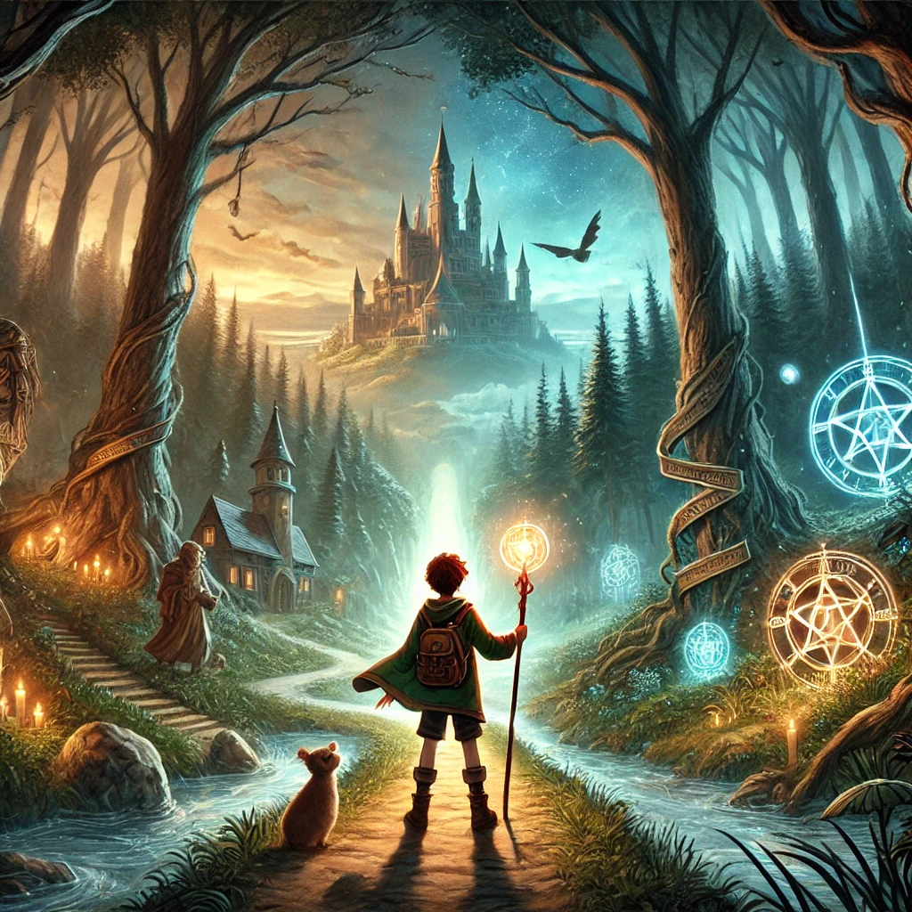

해리포터
목차
작가
J. K. 롤링
출판일
1997년
감상평에 대한 AI그림
해리 포터는 마법과 현실이 어우러진 독창적인 세계를 그려낸 작품이다. 주인공의 성장과 우정, 그리고 선과 악의 대결을 통해 인간의 본성과 용기의 의미를 깊이 있게 탐구한다. 읽을 때마다 새로운 발견과 감동을 선사하는, 전 세대를 아우르는 매력적인 시리즈이다.

감상평에 대한 AI평가
이 평은 긍정적이고 감탄하는 감정을 담고 있습니다.
✨ 긍정적인 표현: "독창적인 세계", "인간의 본성과 용기의 의미를 깊이 있게 탐구", "새로운 발견과 감동", "전 세대를 아우르는 매력적인 시리즈" 등에서 작품에 대한 찬사가 드러납니다.
✨ 감탄과 애정: 반복해서 읽을 때마다 새로운 감동을 준다는 언급은 작품에 대한 애정과 감탄을 나타냅니다.
✨ 균형 잡힌 평가: 단순히 극찬하는 것이 아니라 성장, 우정, 선과 악의 대결 같은 핵심 주제를 짚어 작품의 깊이를 강조하는 점도 인상적입니다.